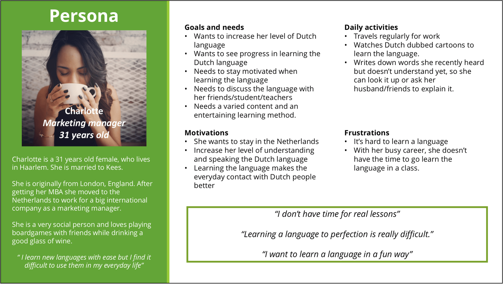

People are learning new vocabulary everyday. But learning a new language from scratch is hard and if you have a busy life, it's hard to find time to learn.
During the UX fundamentals course of Careerfoundry, I designed a vocabulary app. A way to empower people to learn new languages.
I started the process by doing research. One way to learn vocabulary is by using flashcards. A flashcard is a card containing a small amount of information - an easy aid when learning a language.
Flashcard apps are very popular and there are a lot of different apps available in the App Store. But while flashcards are great to cram up new words, I also felt that this way of learning could be a bit boring. I looked at 3 different flashcard apps. What I saw is that most of these apps were targeted at kids and students. Most of the apps I looked at, tried to make the learning more fun by using quizzes and games.
In the user interviews, I learned that all my users had a personal reason to learn a language. Some of them where expats now living in the Netherlands, others had roots in foreign countries and because of that they had a great interest in learning the language. All of them found it hard the learn a language. Based on the user interviews I created a persona.
"Our scavenger hunt app users need a way to quickly set up a new, fun, and interesting scavenger hunt in their area with locations that really spark their interest because they wish to go off-the-beaten-path and (re)discover the area they’re in together with friends and family in a fun way."
"We will know this to be true when we see how many scavenger hunt app users are using our app to explore the area they’re in."
With the user in mind, I created user flows for the language learning app. I wanted to use flashcards for learning the vocabulary. While flashcards are useful when you’re cramming the words, cramming words itself isn’t the most fun thing to do – it is just something that needs to be done if you’re learning a language. As the user wants to have interesting topics and wants the learning to be fun, I came up with the following lesson structure:
Based on the user flows, I started making wireframes. First, I created some quick sketches using the 6-8-5 Exploratory Sketching technique. I sketched out six to eight ideas in five minutes and hanged them sketches on the wall.
After 5 rounds, I had about 30 different simple wireframes. I thought about the navigation in the app and decided on a flat navigation, using a bottom bar. I worked out my best ideas even further, keeping in mind the user flows I had created before - with this I started forming a paper-prototype.
To make the paper-prototype more interactive, I used the tool Prott, a great app for paper prototyping. Simply snap some shots of the wireframes you've made, then select that one of the buttons on your prototype and connect it with the next screen. Within 30 minutes, I had a working prototype on my phone that I could test with potential users.
I prepared an usability test plan and recruited users to test with. Goal of the usability test was to find out if they could understand the structure of the app and to find out what they think about the lessons.
While flashcards are a great way to learn a new language, creating an mobile app for this is difficult. While you of course can make use of flashcards in a languange learning app, I wonder if is the right way to learn a new language. People are more comfortable with fun quizzes and excercises than with cramming up words with a flashcards.
For this case, I only did paper-prototyping - if I were to really make this app, I would first research further if flashcards are the right way to learn an language and how the users want to learn a language. More focus on the real needs instead of the requirement of using flashcards.